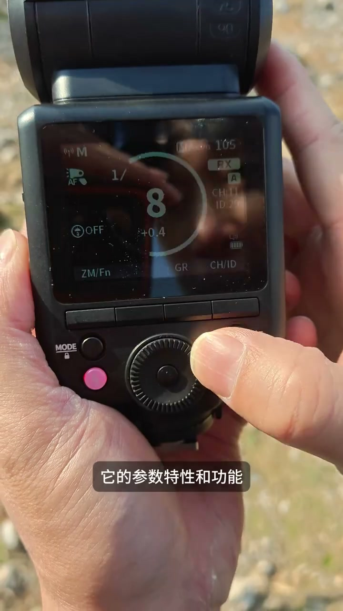
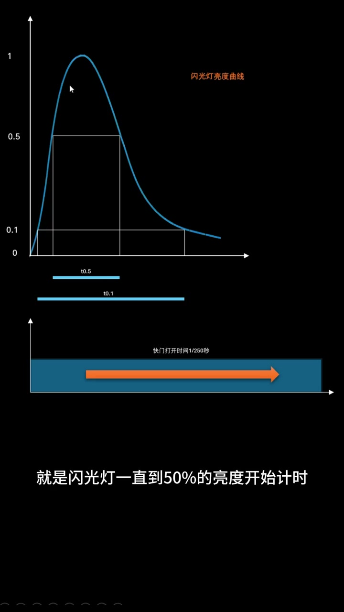

内容要点
[00:00] 经常听到有人问
[00:01] 某某灯大太阳底下够不够压光
[00:03] 其实够不够可能不仅仅在灯上面
[00:06] 相机的影响会更大
[00:08] 今天我来展示一下
[00:09] 用一支基顶灯来外景压光
[00:11] 而且只用它的四分之一的输出
[00:14] 这而是鱼龙雪山脚下
[00:15] 这里的海拔2600
[00:16] 下部的阳光还是很强烈的
[00:19] 我们要挑战一下
[00:20] 用一支基顶灯
[00:21] 在这样强烈的环境下压光
[00:23] 今天我用的这支灯是牛尔的Z2
[00:26] 它的参数特性和功能
[00:28] 基本上对标神牛的Veepro
[00:30] 但价格只有一半多
[00:32] 所以它是一款性价比很高的灯
[00:34] 现在在网上
[00:35] 你差不多六七百块钱就可以买得到
[00:37] 这支灯是七十六瓦鸟
[00:39] 和主流六十指数的基顶闪
[00:42] 基本上亮度是一致的
[00:43] 今天我只用四分之一的输出
[00:46] 四分之一输出的好处是
[00:48] 这支基顶灯的电池足够我一天的使用
[00:51] 而且它的回应非常快
[00:53] 大概在0.5秒左右
[00:54] 所以当摩塔有好的状态和情绪时
[00:58] 我不停的抓拍都没有问题
[01:00] 这次拍摄的环境场景
[01:02] 我的灯距离摩塔大概有三米远
[01:04] 这个距离在外景是比较适合的
[01:06] 它能够照射到摩塔的全身
[01:09] 并且上下的光亮度
[01:10] 能基本保持在一致
[01:12] 我用的快门是五千分之一秒
[01:14] I手250
[01:15] 因为索尼A93最低的原生I手
[01:18] 就是250
[01:19] 光圈四点五
[01:20] 可以看到不光从容有余
[01:23] 一支普通的基顶闪四分之一的输出
[01:26] 就能够满足在小高原
[01:27] 下午强光下逆光的拍摄
[01:30] 所以以后是不是可以抛弃
[01:31] 沉重的外拍灯了
[01:33] 只带着一支基丁闪
[01:34] 就可以满足一天的拍摄
[01:36] 是不是玩灯的摄影师的一个福音
[01:39] 我简单的介绍一下
[01:40] 全域快门压光的原理
[01:42] 目前主流相机的快门速度
[01:45] 受限于最高的同步速度
[01:47] 这个速度取决于快门机械
[01:49] 联幕式装置移动的速度
[01:51] 或者电子快门的组行扫描速度
[01:54] 大多数是250分之一秒
[01:57] 但这个快门速度
[01:58] 远远不是闪光灯
[01:59] 最有效的快门速度
[02:01] 比如我使用的四分之一输出下
[02:03] 闪光灯的持续时间
[02:05] 可能在一两千分之一秒以内
[02:08] 这就意味着闪光灯
[02:09] 早就给主体补光完毕了
[02:11] 但快门还是关不上
[02:13] 环境还在持续曝光
[02:15] 这样很容易把天空什么拍过报
[02:18] 所以能够让闪光灯结束闪烁时
[02:20] 快门也关上
[02:21] 这时候灯的效率会最高
[02:24] 全域快门同时读取
[02:26] 所有新冒传的像素点
[02:28] 它已经没有最高同步速度一说了
[02:30] 几乎可以在任何速度下同步
[02:32] 来简单的介绍一下闪光灯原理
[02:35] 这个是闪光灯的亮度曲线
[02:38] 这里面有很重要的两个复制
[02:39] 一个是T0.1
[02:41] T0.1的值
[02:42] 一个是T0.5的值
[02:44] T0.1的意思就是
[02:45] 闪光灯从完全暗的情况之下
[02:48] 一下达到全光输出最亮
[02:51] 那么达到10%亮度的时候
[02:53] 开始计算时间
[02:54] 一直到闪光灯回到10%的亮度
[02:58] 这段时间叫T0.1
[03:00] T0.5就是闪光灯
[03:02] 一直到50%的亮度开始计时
[03:05] 直到闪光灯回复到50%的亮度时来截止
[03:09] 那么这段时间是闪光灯T0.5的时间
[03:12] 这两个数字
[03:13] 特别是在小输出的情况之下
[03:15] 要远远的小于整个快门的打开时间
[03:18] 那我们使用全域快门的时候
[03:20] 因为不再受到250分之一秒的限制
[03:23] 所以我们可以把快门速度就卡在
[03:25] 这个播风的短的时间之内
[03:29] 所以我这次快门用到了5000分之一秒
[03:32] 就取了这一小段
[03:33] 所以闪光灯在这一小段之内
[03:35] 它的利用率非常高
[03:37] 有朋友问我
[03:38] 开高速同步
[03:39] 快门也可以达到8000分之一秒
[03:41] 高速同步和全域快门是两个概念
[03:43] 高速同步并不有助于压光
[03:46] 高速同步会让闪光灯
[03:48] 最后在平闪状态下
[03:49] 它反倒让闪光灯的效率下降
[03:52] 所以说如果你手上不是全域快门的相机
[03:55] 那么最好的压光快门速度
[03:57] 是你相机的最高同步速度
[03:59] 大概也就是250分之一秒
[04:01] 这个在我们之前的视频中有说
[04:03] 感兴趣的可以去翻看一下
[04:05] 这种压光效果很感人
[04:07] 但原理解释一时半会不一定听得懂
[04:10] 也没有关系
[04:11] 有机会可以去来参加我的现场灯光课程

